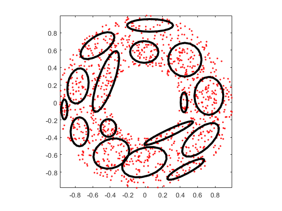
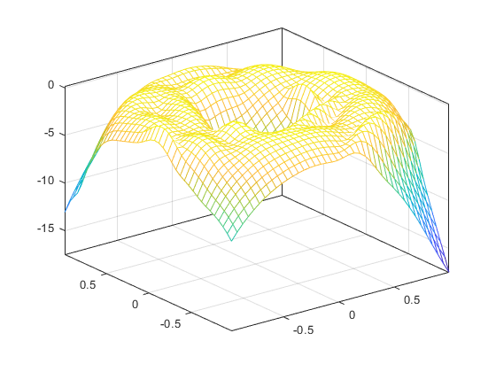
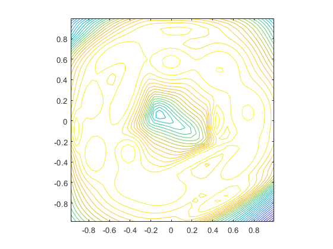

gmmGrow
Increase no. of gaussian components within a GMM
Contents
Syntax
- gmmPrm=gmmGrow(gmmPrm, targetGaussianNum)
Description
gmmPrm=gmmGrow(gmmPrm, targetGaussianNum) performs center splitting until the target no. of Gaussian components is reached.
The target number of Gaussian components should be less than or equal to the original number of Gaussian components.
Example
gmmGrowDemo
Start KMEANS to find the initial mean vectors... GMM iteration: 0/500, log likelihood. = -2200.202638 GMM iteration: 1/500, log likelihood. = -1945.255858 GMM iteration: 2/500, log likelihood. = -1945.255858 GMM total iteration count = 3, log likelihood. = -1945.255858 Start KMEANS to find the initial mean vectors... GMM iteration: 0/500, log likelihood. = -2005.455874 GMM iteration: 1/500, log likelihood. = -1841.451696 GMM iteration: 2/500, log likelihood. = -1821.502530 GMM iteration: 3/500, log likelihood. = -1814.663104 GMM iteration: 4/500, log likelihood. = -1813.147872 GMM iteration: 5/500, log likelihood. = -1812.712148 GMM iteration: 6/500, log likelihood. = -1812.432061 GMM iteration: 7/500, log likelihood. = -1812.177476 GMM iteration: 8/500, log likelihood. = -1811.932861 GMM iteration: 9/500, log likelihood. = -1811.696456 GMM iteration: 10/500, log likelihood. = -1811.468090 GMM iteration: 11/500, log likelihood. = -1811.247772 GMM iteration: 12/500, log likelihood. = -1811.035512 GMM iteration: 13/500, log likelihood. = -1810.831302 GMM iteration: 14/500, log likelihood. = -1810.635110 GMM iteration: 15/500, log likelihood. = -1810.446880 GMM iteration: 16/500, log likelihood. = -1810.266533 GMM iteration: 17/500, log likelihood. = -1810.093971 GMM iteration: 18/500, log likelihood. = -1809.929074 GMM iteration: 19/500, log likelihood. = -1809.771708 GMM iteration: 20/500, log likelihood. = -1809.621708 GMM iteration: 21/500, log likelihood. = -1809.478661 GMM iteration: 22/500, log likelihood. = -1809.342265 GMM iteration: 23/500, log likelihood. = -1809.212358 GMM iteration: 24/500, log likelihood. = -1809.088796 GMM iteration: 25/500, log likelihood. = -1808.971435 GMM iteration: 26/500, log likelihood. = -1808.860118 GMM iteration: 27/500, log likelihood. = -1808.754679 GMM iteration: 28/500, log likelihood. = -1808.654941 GMM iteration: 29/500, log likelihood. = -1808.560720 GMM iteration: 30/500, log likelihood. = -1808.471826 GMM iteration: 31/500, log likelihood. = -1808.388061 GMM iteration: 32/500, log likelihood. = -1808.309227 GMM iteration: 33/500, log likelihood. = -1808.235122 GMM iteration: 34/500, log likelihood. = -1808.165542 GMM iteration: 35/500, log likelihood. = -1808.100287 GMM iteration: 36/500, log likelihood. = -1808.039154 GMM iteration: 37/500, log likelihood. = -1807.981945 GMM iteration: 38/500, log likelihood. = -1807.928463 GMM iteration: 39/500, log likelihood. = -1807.878516 GMM iteration: 40/500, log likelihood. = -1807.831916 GMM iteration: 41/500, log likelihood. = -1807.788481 GMM iteration: 42/500, log likelihood. = -1807.748032 GMM iteration: 43/500, log likelihood. = -1807.710399 GMM iteration: 44/500, log likelihood. = -1807.675416 GMM iteration: 45/500, log likelihood. = -1807.642923 GMM iteration: 46/500, log likelihood. = -1807.612767 GMM iteration: 47/500, log likelihood. = -1807.584804 GMM iteration: 48/500, log likelihood. = -1807.558892 GMM iteration: 49/500, log likelihood. = -1807.534899 GMM iteration: 50/500, log likelihood. = -1807.512698 GMM iteration: 51/500, log likelihood. = -1807.492170 GMM iteration: 52/500, log likelihood. = -1807.473201 GMM iteration: 53/500, log likelihood. = -1807.455685 GMM iteration: 54/500, log likelihood. = -1807.439518 GMM iteration: 55/500, log likelihood. = -1807.424607 GMM iteration: 56/500, log likelihood. = -1807.410861 GMM iteration: 57/500, log likelihood. = -1807.398197 GMM iteration: 58/500, log likelihood. = -1807.386535 GMM iteration: 59/500, log likelihood. = -1807.375802 GMM iteration: 60/500, log likelihood. = -1807.365928 GMM iteration: 61/500, log likelihood. = -1807.356848 GMM iteration: 62/500, log likelihood. = -1807.348504 GMM iteration: 63/500, log likelihood. = -1807.340837 GMM iteration: 64/500, log likelihood. = -1807.333797 GMM iteration: 65/500, log likelihood. = -1807.327335 GMM iteration: 66/500, log likelihood. = -1807.321404 GMM iteration: 67/500, log likelihood. = -1807.315965 GMM iteration: 68/500, log likelihood. = -1807.310977 GMM iteration: 69/500, log likelihood. = -1807.306405 GMM iteration: 70/500, log likelihood. = -1807.302215 GMM iteration: 71/500, log likelihood. = -1807.298377 GMM iteration: 72/500, log likelihood. = -1807.294862 GMM iteration: 73/500, log likelihood. = -1807.291644 GMM iteration: 74/500, log likelihood. = -1807.288698 GMM iteration: 75/500, log likelihood. = -1807.286003 GMM iteration: 76/500, log likelihood. = -1807.283537 GMM iteration: 77/500, log likelihood. = -1807.281281 GMM iteration: 78/500, log likelihood. = -1807.279219 GMM iteration: 79/500, log likelihood. = -1807.277334 GMM iteration: 80/500, log likelihood. = -1807.275610 GMM iteration: 81/500, log likelihood. = -1807.274035 GMM iteration: 82/500, log likelihood. = -1807.272597 GMM iteration: 83/500, log likelihood. = -1807.271282 GMM iteration: 84/500, log likelihood. = -1807.270082 GMM iteration: 85/500, log likelihood. = -1807.268985 GMM iteration: 86/500, log likelihood. = -1807.267984 GMM iteration: 87/500, log likelihood. = -1807.267070 GMM iteration: 88/500, log likelihood. = -1807.266236 GMM iteration: 89/500, log likelihood. = -1807.265475 GMM iteration: 90/500, log likelihood. = -1807.264780 GMM iteration: 91/500, log likelihood. = -1807.264146 GMM iteration: 92/500, log likelihood. = -1807.263568 GMM iteration: 93/500, log likelihood. = -1807.263041 GMM iteration: 94/500, log likelihood. = -1807.262560 GMM iteration: 95/500, log likelihood. = -1807.262121 GMM iteration: 96/500, log likelihood. = -1807.261721 GMM iteration: 97/500, log likelihood. = -1807.261356 GMM iteration: 98/500, log likelihood. = -1807.261023 GMM iteration: 99/500, log likelihood. = -1807.260720 GMM iteration: 100/500, log likelihood. = -1807.260443 GMM iteration: 101/500, log likelihood. = -1807.260191 GMM iteration: 102/500, log likelihood. = -1807.259962 GMM iteration: 103/500, log likelihood. = -1807.259752 GMM iteration: 104/500, log likelihood. = -1807.259562 GMM iteration: 105/500, log likelihood. = -1807.259388 GMM iteration: 106/500, log likelihood. = -1807.259229 GMM iteration: 107/500, log likelihood. = -1807.259085 GMM iteration: 108/500, log likelihood. = -1807.258953 GMM iteration: 109/500, log likelihood. = -1807.258834 GMM iteration: 110/500, log likelihood. = -1807.258725 GMM iteration: 111/500, log likelihood. = -1807.258625 GMM iteration: 112/500, log likelihood. = -1807.258535 GMM iteration: 113/500, log likelihood. = -1807.258452 GMM iteration: 114/500, log likelihood. = -1807.258377 GMM iteration: 115/500, log likelihood. = -1807.258309 GMM iteration: 116/500, log likelihood. = -1807.258246 GMM iteration: 117/500, log likelihood. = -1807.258189 GMM iteration: 118/500, log likelihood. = -1807.258138 GMM iteration: 119/500, log likelihood. = -1807.258091 GMM iteration: 120/500, log likelihood. = -1807.258048 GMM iteration: 121/500, log likelihood. = -1807.258009 GMM iteration: 122/500, log likelihood. = -1807.257973 GMM iteration: 123/500, log likelihood. = -1807.257941 GMM iteration: 124/500, log likelihood. = -1807.257911 GMM iteration: 125/500, log likelihood. = -1807.257885 GMM iteration: 126/500, log likelihood. = -1807.257860 GMM iteration: 127/500, log likelihood. = -1807.257838 GMM iteration: 128/500, log likelihood. = -1807.257818 GMM iteration: 129/500, log likelihood. = -1807.257799 GMM iteration: 130/500, log likelihood. = -1807.257783 GMM iteration: 131/500, log likelihood. = -1807.257767 GMM iteration: 132/500, log likelihood. = -1807.257753 GMM iteration: 133/500, log likelihood. = -1807.257741 GMM iteration: 134/500, log likelihood. = -1807.257729 GMM iteration: 135/500, log likelihood. = -1807.257719 GMM iteration: 136/500, log likelihood. = -1807.257709 GMM iteration: 137/500, log likelihood. = -1807.257700 GMM iteration: 138/500, log likelihood. = -1807.257693 GMM iteration: 139/500, log likelihood. = -1807.257685 GMM iteration: 140/500, log likelihood. = -1807.257679 GMM iteration: 141/500, log likelihood. = -1807.257673 GMM iteration: 142/500, log likelihood. = -1807.257667 GMM iteration: 143/500, log likelihood. = -1807.257662 GMM iteration: 144/500, log likelihood. = -1807.257658 GMM iteration: 145/500, log likelihood. = -1807.257654 GMM iteration: 146/500, log likelihood. = -1807.257650 GMM iteration: 147/500, log likelihood. = -1807.257647 GMM iteration: 148/500, log likelihood. = -1807.257644 GMM iteration: 149/500, log likelihood. = -1807.257641 GMM iteration: 150/500, log likelihood. = -1807.257638 GMM iteration: 151/500, log likelihood. = -1807.257636 GMM iteration: 152/500, log likelihood. = -1807.257634 GMM iteration: 153/500, log likelihood. = -1807.257632 GMM iteration: 154/500, log likelihood. = -1807.257630 GMM iteration: 155/500, log likelihood. = -1807.257629 GMM iteration: 156/500, log likelihood. = -1807.257627 GMM iteration: 157/500, log likelihood. = -1807.257626 GMM iteration: 158/500, log likelihood. = -1807.257625 GMM iteration: 159/500, log likelihood. = -1807.257623 GMM iteration: 160/500, log likelihood. = -1807.257622 GMM iteration: 161/500, log likelihood. = -1807.257622 GMM iteration: 162/500, log likelihood. = -1807.257621 GMM iteration: 163/500, log likelihood. = -1807.257620 GMM iteration: 164/500, log likelihood. = -1807.257619 GMM iteration: 165/500, log likelihood. = -1807.257619 GMM iteration: 166/500, log likelihood. = -1807.257618 GMM iteration: 167/500, log likelihood. = -1807.257618 GMM iteration: 168/500, log likelihood. = -1807.257617 GMM iteration: 169/500, log likelihood. = -1807.257617 GMM iteration: 170/500, log likelihood. = -1807.257616 GMM iteration: 171/500, log likelihood. = -1807.257616 GMM iteration: 172/500, log likelihood. = -1807.257616 GMM iteration: 173/500, log likelihood. = -1807.257615 GMM iteration: 174/500, log likelihood. = -1807.257615 GMM iteration: 175/500, log likelihood. = -1807.257615 GMM iteration: 176/500, log likelihood. = -1807.257615 GMM iteration: 177/500, log likelihood. = -1807.257614 GMM iteration: 178/500, log likelihood. = -1807.257614 GMM iteration: 179/500, log likelihood. = -1807.257614 GMM iteration: 180/500, log likelihood. = -1807.257614 GMM iteration: 181/500, log likelihood. = -1807.257614 GMM iteration: 182/500, log likelihood. = -1807.257614 GMM iteration: 183/500, log likelihood. = -1807.257614 GMM iteration: 184/500, log likelihood. = -1807.257613 GMM iteration: 185/500, log likelihood. = -1807.257613 GMM iteration: 186/500, log likelihood. = -1807.257613 GMM iteration: 187/500, log likelihood. = -1807.257613 GMM iteration: 188/500, log likelihood. = -1807.257613 GMM iteration: 189/500, log likelihood. = -1807.257613 GMM iteration: 190/500, log likelihood. = -1807.257613 GMM iteration: 191/500, log likelihood. = -1807.257613 GMM iteration: 192/500, log likelihood. = -1807.257613 GMM iteration: 193/500, log likelihood. = -1807.257613 GMM iteration: 194/500, log likelihood. = -1807.257613 GMM iteration: 195/500, log likelihood. = -1807.257613 GMM iteration: 196/500, log likelihood. = -1807.257613 GMM iteration: 197/500, log likelihood. = -1807.257613 GMM iteration: 198/500, log likelihood. = -1807.257613 GMM iteration: 199/500, log likelihood. = -1807.257613 GMM iteration: 200/500, log likelihood. = -1807.257613 GMM iteration: 201/500, log likelihood. = -1807.257613 GMM iteration: 202/500, log likelihood. = -1807.257613 GMM iteration: 203/500, log likelihood. = -1807.257613 GMM iteration: 204/500, log likelihood. = -1807.257613 GMM iteration: 205/500, log likelihood. = -1807.257612 GMM iteration: 206/500, log likelihood. = -1807.257612 GMM iteration: 207/500, log likelihood. = -1807.257612 GMM iteration: 208/500, log likelihood. = -1807.257612 GMM iteration: 209/500, log likelihood. = -1807.257612 GMM iteration: 210/500, log likelihood. = -1807.257612 GMM iteration: 211/500, log likelihood. = -1807.257612 GMM iteration: 212/500, log likelihood. = -1807.257612 GMM iteration: 213/500, log likelihood. = -1807.257612 GMM iteration: 214/500, log likelihood. = -1807.257612 GMM iteration: 215/500, log likelihood. = -1807.257612 GMM iteration: 216/500, log likelihood. = -1807.257612 GMM iteration: 217/500, log likelihood. = -1807.257612 GMM iteration: 218/500, log likelihood. = -1807.257612 GMM iteration: 219/500, log likelihood. = -1807.257612 GMM iteration: 220/500, log likelihood. = -1807.257612 GMM iteration: 221/500, log likelihood. = -1807.257612 GMM iteration: 222/500, log likelihood. = -1807.257612 GMM iteration: 223/500, log likelihood. = -1807.257612 GMM iteration: 224/500, log likelihood. = -1807.257612 GMM iteration: 225/500, log likelihood. = -1807.257612 GMM iteration: 226/500, log likelihood. = -1807.257612 GMM iteration: 227/500, log likelihood. = -1807.257612 GMM iteration: 228/500, log likelihood. = -1807.257612 GMM iteration: 229/500, log likelihood. = -1807.257612 GMM iteration: 230/500, log likelihood. = -1807.257612 GMM iteration: 231/500, log likelihood. = -1807.257612 GMM iteration: 232/500, log likelihood. = -1807.257612 GMM iteration: 233/500, log likelihood. = -1807.257612 GMM iteration: 234/500, log likelihood. = -1807.257612 GMM iteration: 235/500, log likelihood. = -1807.257612 GMM iteration: 236/500, log likelihood. = -1807.257612 GMM iteration: 237/500, log likelihood. = -1807.257612 GMM iteration: 238/500, log likelihood. = -1807.257612 GMM iteration: 239/500, log likelihood. = -1807.257612 GMM iteration: 240/500, log likelihood. = -1807.257612 GMM iteration: 241/500, log likelihood. = -1807.257612 GMM iteration: 242/500, log likelihood. = -1807.257612 GMM iteration: 243/500, log likelihood. = -1807.257612 GMM iteration: 244/500, log likelihood. = -1807.257612 GMM iteration: 245/500, log likelihood. = -1807.257612 GMM iteration: 246/500, log likelihood. = -1807.257612 GMM iteration: 247/500, log likelihood. = -1807.257612 GMM iteration: 248/500, log likelihood. = -1807.257612 GMM iteration: 249/500, log likelihood. = -1807.257612 GMM iteration: 250/500, log likelihood. = -1807.257612 GMM iteration: 251/500, log likelihood. = -1807.257612 GMM iteration: 252/500, log likelihood. = -1807.257612 GMM iteration: 253/500, log likelihood. = -1807.257612 GMM iteration: 254/500, log likelihood. = -1807.257612 GMM iteration: 255/500, log likelihood. = -1807.257612 GMM iteration: 256/500, log likelihood. = -1807.257612 GMM iteration: 257/500, log likelihood. = -1807.257612 GMM iteration: 258/500, log likelihood. = -1807.257612 GMM iteration: 259/500, log likelihood. = -1807.257612 GMM iteration: 260/500, log likelihood. = -1807.257612 GMM iteration: 261/500, log likelihood. = -1807.257612 GMM iteration: 262/500, log likelihood. = -1807.257612 GMM iteration: 263/500, log likelihood. = -1807.257612 GMM iteration: 264/500, log likelihood. = -1807.257612 GMM iteration: 265/500, log likelihood. = -1807.257612 GMM iteration: 266/500, log likelihood. = -1807.257612 GMM iteration: 267/500, log likelihood. = -1807.257612 GMM iteration: 268/500, log likelihood. = -1807.257612 GMM iteration: 269/500, log likelihood. = -1807.257612 GMM iteration: 270/500, log likelihood. = -1807.257612 GMM iteration: 271/500, log likelihood. = -1807.257612 GMM iteration: 272/500, log likelihood. = -1807.257612 GMM iteration: 273/500, log likelihood. = -1807.257612 GMM iteration: 274/500, log likelihood. = -1807.257612 GMM iteration: 275/500, log likelihood. = -1807.257612 GMM iteration: 276/500, log likelihood. = -1807.257612 GMM iteration: 277/500, log likelihood. = -1807.257612 GMM iteration: 278/500, log likelihood. = -1807.257612 GMM iteration: 279/500, log likelihood. = -1807.257612 GMM iteration: 280/500, log likelihood. = -1807.257612 GMM iteration: 281/500, log likelihood. = -1807.257612 GMM iteration: 282/500, log likelihood. = -1807.257612 GMM iteration: 283/500, log likelihood. = -1807.257612 GMM iteration: 284/500, log likelihood. = -1807.257612 GMM iteration: 285/500, log likelihood. = -1807.257612 GMM iteration: 286/500, log likelihood. = -1807.257612 GMM iteration: 287/500, log likelihood. = -1807.257612 GMM iteration: 288/500, log likelihood. = -1807.257612 GMM iteration: 289/500, log likelihood. = -1807.257612 GMM iteration: 290/500, log likelihood. = -1807.257612 GMM iteration: 291/500, log likelihood. = -1807.257612 GMM iteration: 292/500, log likelihood. = -1807.257612 GMM iteration: 293/500, log likelihood. = -1807.257612 GMM iteration: 294/500, log likelihood. = -1807.257612 GMM iteration: 295/500, log likelihood. = -1807.257612 GMM iteration: 296/500, log likelihood. = -1807.257612 GMM iteration: 297/500, log likelihood. = -1807.257612 GMM iteration: 298/500, log likelihood. = -1807.257612 GMM total iteration count = 299, log likelihood. = -1807.257612 Start KMEANS to find the initial mean vectors... GMM iteration: 0/500, log likelihood. = -2128.082735 GMM iteration: 1/500, log likelihood. = -1860.717241 GMM iteration: 2/500, log likelihood. = -1793.587395 GMM iteration: 3/500, log likelihood. = -1705.183255 GMM iteration: 4/500, log likelihood. = -1620.013329 GMM iteration: 5/500, log likelihood. = -1566.102657 GMM iteration: 6/500, log likelihood. = -1546.358157 GMM iteration: 7/500, log likelihood. = -1540.786476 GMM iteration: 8/500, log likelihood. = -1538.897762 GMM iteration: 9/500, log likelihood. = -1537.965994 GMM iteration: 10/500, log likelihood. = -1537.396562 GMM iteration: 11/500, log likelihood. = -1537.019452 GMM iteration: 12/500, log likelihood. = -1536.759023 GMM iteration: 13/500, log likelihood. = -1536.572482 GMM iteration: 14/500, log likelihood. = -1536.433722 GMM iteration: 15/500, log likelihood. = -1536.326471 GMM iteration: 16/500, log likelihood. = -1536.240488 GMM iteration: 17/500, log likelihood. = -1536.169262 GMM iteration: 18/500, log likelihood. = -1536.108600 GMM iteration: 19/500, log likelihood. = -1536.055746 GMM iteration: 20/500, log likelihood. = -1536.008841 GMM iteration: 21/500, log likelihood. = -1535.966588 GMM iteration: 22/500, log likelihood. = -1535.928043 GMM iteration: 23/500, log likelihood. = -1535.892487 GMM iteration: 24/500, log likelihood. = -1535.859342 GMM iteration: 25/500, log likelihood. = -1535.828123 GMM iteration: 26/500, log likelihood. = -1535.798398 GMM iteration: 27/500, log likelihood. = -1535.769774 GMM iteration: 28/500, log likelihood. = -1535.741870 GMM iteration: 29/500, log likelihood. = -1535.714312 GMM iteration: 30/500, log likelihood. = -1535.686722 GMM iteration: 31/500, log likelihood. = -1535.658705 GMM iteration: 32/500, log likelihood. = -1535.629845 GMM iteration: 33/500, log likelihood. = -1535.599694 GMM iteration: 34/500, log likelihood. = -1535.567765 GMM iteration: 35/500, log likelihood. = -1535.533518 GMM iteration: 36/500, log likelihood. = -1535.496358 GMM iteration: 37/500, log likelihood. = -1535.455614 GMM iteration: 38/500, log likelihood. = -1535.410533 GMM iteration: 39/500, log likelihood. = -1535.360262 GMM iteration: 40/500, log likelihood. = -1535.303835 GMM iteration: 41/500, log likelihood. = -1535.240150 GMM iteration: 42/500, log likelihood. = -1535.167955 GMM iteration: 43/500, log likelihood. = -1535.085821 GMM iteration: 44/500, log likelihood. = -1534.992120 GMM iteration: 45/500, log likelihood. = -1534.884999 GMM iteration: 46/500, log likelihood. = -1534.762354 GMM iteration: 47/500, log likelihood. = -1534.621799 GMM iteration: 48/500, log likelihood. = -1534.460646 GMM iteration: 49/500, log likelihood. = -1534.275876 GMM iteration: 50/500, log likelihood. = -1534.064134 GMM iteration: 51/500, log likelihood. = -1533.821722 GMM iteration: 52/500, log likelihood. = -1533.544632 GMM iteration: 53/500, log likelihood. = -1533.228599 GMM iteration: 54/500, log likelihood. = -1532.869213 GMM iteration: 55/500, log likelihood. = -1532.462093 GMM iteration: 56/500, log likelihood. = -1532.003149 GMM iteration: 57/500, log likelihood. = -1531.488925 GMM iteration: 58/500, log likelihood. = -1530.917034 GMM iteration: 59/500, log likelihood. = -1530.286632 GMM iteration: 60/500, log likelihood. = -1529.598854 GMM iteration: 61/500, log likelihood. = -1528.857081 GMM iteration: 62/500, log likelihood. = -1528.066907 GMM iteration: 63/500, log likelihood. = -1527.235655 GMM iteration: 64/500, log likelihood. = -1526.371462 GMM iteration: 65/500, log likelihood. = -1525.482049 GMM iteration: 66/500, log likelihood. = -1524.573455 GMM iteration: 67/500, log likelihood. = -1523.649054 GMM iteration: 68/500, log likelihood. = -1522.709076 GMM iteration: 69/500, log likelihood. = -1521.750663 GMM iteration: 70/500, log likelihood. = -1520.768371 GMM iteration: 71/500, log likelihood. = -1519.754898 GMM iteration: 72/500, log likelihood. = -1518.701895 GMM iteration: 73/500, log likelihood. = -1517.600717 GMM iteration: 74/500, log likelihood. = -1516.443063 GMM iteration: 75/500, log likelihood. = -1515.221485 GMM iteration: 76/500, log likelihood. = -1513.929749 GMM iteration: 77/500, log likelihood. = -1512.563081 GMM iteration: 78/500, log likelihood. = -1511.118327 GMM iteration: 79/500, log likelihood. = -1509.594106 GMM iteration: 80/500, log likelihood. = -1507.991025 GMM iteration: 81/500, log likelihood. = -1506.311970 GMM iteration: 82/500, log likelihood. = -1504.562403 GMM iteration: 83/500, log likelihood. = -1502.750501 GMM iteration: 84/500, log likelihood. = -1500.886888 GMM iteration: 85/500, log likelihood. = -1498.983801 GMM iteration: 86/500, log likelihood. = -1497.053702 GMM iteration: 87/500, log likelihood. = -1495.107581 GMM iteration: 88/500, log likelihood. = -1493.153428 GMM iteration: 89/500, log likelihood. = -1491.195297 GMM iteration: 90/500, log likelihood. = -1489.233208 GMM iteration: 91/500, log likelihood. = -1487.263816 GMM iteration: 92/500, log likelihood. = -1485.281530 GMM iteration: 93/500, log likelihood. = -1483.279727 GMM iteration: 94/500, log likelihood. = -1481.251795 GMM iteration: 95/500, log likelihood. = -1479.191917 GMM iteration: 96/500, log likelihood. = -1477.095655 GMM iteration: 97/500, log likelihood. = -1474.960464 GMM iteration: 98/500, log likelihood. = -1472.786263 GMM iteration: 99/500, log likelihood. = -1470.576138 GMM iteration: 100/500, log likelihood. = -1468.337141 GMM iteration: 101/500, log likelihood. = -1466.081090 GMM iteration: 102/500, log likelihood. = -1463.825133 GMM iteration: 103/500, log likelihood. = -1461.591845 GMM iteration: 104/500, log likelihood. = -1459.408578 GMM iteration: 105/500, log likelihood. = -1457.305945 GMM iteration: 106/500, log likelihood. = -1455.511772 GMM iteration: 107/500, log likelihood. = -1454.038468 GMM iteration: 108/500, log likelihood. = -1452.789122 GMM iteration: 109/500, log likelihood. = -1451.717588 GMM iteration: 110/500, log likelihood. = -1450.796095 GMM iteration: 111/500, log likelihood. = -1450.005796 GMM iteration: 112/500, log likelihood. = -1449.331989 GMM iteration: 113/500, log likelihood. = -1448.761777 GMM iteration: 114/500, log likelihood. = -1448.283092 GMM iteration: 115/500, log likelihood. = -1447.884414 GMM iteration: 116/500, log likelihood. = -1447.554834 GMM iteration: 117/500, log likelihood. = -1447.284206 GMM iteration: 118/500, log likelihood. = -1447.063304 GMM iteration: 119/500, log likelihood. = -1446.883914 GMM iteration: 120/500, log likelihood. = -1446.738867 GMM iteration: 121/500, log likelihood. = -1446.634561 GMM iteration: 122/500, log likelihood. = -1446.576638 GMM iteration: 123/500, log likelihood. = -1446.543346 GMM iteration: 124/500, log likelihood. = -1446.524050 GMM iteration: 125/500, log likelihood. = -1446.512801 GMM iteration: 126/500, log likelihood. = -1446.506206 GMM iteration: 127/500, log likelihood. = -1446.502317 GMM iteration: 128/500, log likelihood. = -1446.500010 GMM iteration: 129/500, log likelihood. = -1446.498635 GMM iteration: 130/500, log likelihood. = -1446.497810 GMM iteration: 131/500, log likelihood. = -1446.497312 GMM iteration: 132/500, log likelihood. = -1446.497011 GMM iteration: 133/500, log likelihood. = -1446.496827 GMM iteration: 134/500, log likelihood. = -1446.496714 GMM iteration: 135/500, log likelihood. = -1446.496645 GMM iteration: 136/500, log likelihood. = -1446.496602 GMM iteration: 137/500, log likelihood. = -1446.496576 GMM iteration: 138/500, log likelihood. = -1446.496559 GMM iteration: 139/500, log likelihood. = -1446.496549 GMM iteration: 140/500, log likelihood. = -1446.496542 GMM iteration: 141/500, log likelihood. = -1446.496538 GMM iteration: 142/500, log likelihood. = -1446.496535 GMM iteration: 143/500, log likelihood. = -1446.496534 GMM iteration: 144/500, log likelihood. = -1446.496533 GMM iteration: 145/500, log likelihood. = -1446.496532 GMM iteration: 146/500, log likelihood. = -1446.496532 GMM iteration: 147/500, log likelihood. = -1446.496531 GMM iteration: 148/500, log likelihood. = -1446.496531 GMM iteration: 149/500, log likelihood. = -1446.496531 GMM iteration: 150/500, log likelihood. = -1446.496531 GMM iteration: 151/500, log likelihood. = -1446.496531 GMM iteration: 152/500, log likelihood. = -1446.496531 GMM iteration: 153/500, log likelihood. = -1446.496531 GMM iteration: 154/500, log likelihood. = -1446.496531 GMM iteration: 155/500, log likelihood. = -1446.496531 GMM iteration: 156/500, log likelihood. = -1446.496531 GMM iteration: 157/500, log likelihood. = -1446.496531 GMM iteration: 158/500, log likelihood. = -1446.496531 GMM iteration: 159/500, log likelihood. = -1446.496531 GMM iteration: 160/500, log likelihood. = -1446.496531 GMM iteration: 161/500, log likelihood. = -1446.496531 GMM iteration: 162/500, log likelihood. = -1446.496531 GMM iteration: 163/500, log likelihood. = -1446.496531 GMM iteration: 164/500, log likelihood. = -1446.496531 GMM iteration: 165/500, log likelihood. = -1446.496531 GMM iteration: 166/500, log likelihood. = -1446.496531 GMM iteration: 167/500, log likelihood. = -1446.496531 GMM iteration: 168/500, log likelihood. = -1446.496531 GMM iteration: 169/500, log likelihood. = -1446.496531 GMM iteration: 170/500, log likelihood. = -1446.496531 GMM iteration: 171/500, log likelihood. = -1446.496531 GMM iteration: 172/500, log likelihood. = -1446.496531 GMM iteration: 173/500, log likelihood. = -1446.496531 GMM iteration: 174/500, log likelihood. = -1446.496531 GMM iteration: 175/500, log likelihood. = -1446.496531 GMM total iteration count = 176, log likelihood. = -1446.496531 Start KMEANS to find the initial mean vectors... GMM iteration: 0/500, log likelihood. = -2252.936270 GMM iteration: 1/500, log likelihood. = -1868.324320 GMM iteration: 2/500, log likelihood. = -1799.326113 GMM iteration: 3/500, log likelihood. = -1700.705572 GMM iteration: 4/500, log likelihood. = -1597.515387 GMM iteration: 5/500, log likelihood. = -1519.502547 GMM iteration: 6/500, log likelihood. = -1473.105311 GMM iteration: 7/500, log likelihood. = -1447.485421 GMM iteration: 8/500, log likelihood. = -1432.709636 GMM iteration: 9/500, log likelihood. = -1423.725142 GMM iteration: 10/500, log likelihood. = -1417.997147 GMM iteration: 11/500, log likelihood. = -1414.077265 GMM iteration: 12/500, log likelihood. = -1411.173787 GMM iteration: 13/500, log likelihood. = -1408.871613 GMM iteration: 14/500, log likelihood. = -1406.967321 GMM iteration: 15/500, log likelihood. = -1405.349757 GMM iteration: 16/500, log likelihood. = -1403.949750 GMM iteration: 17/500, log likelihood. = -1402.719311 GMM iteration: 18/500, log likelihood. = -1401.622047 GMM iteration: 19/500, log likelihood. = -1400.628502 GMM iteration: 20/500, log likelihood. = -1399.712434 GMM iteration: 21/500, log likelihood. = -1398.849553 GMM iteration: 22/500, log likelihood. = -1398.020573 GMM iteration: 23/500, log likelihood. = -1397.207677 GMM iteration: 24/500, log likelihood. = -1396.391964 GMM iteration: 25/500, log likelihood. = -1395.551793 GMM iteration: 26/500, log likelihood. = -1394.673998 GMM iteration: 27/500, log likelihood. = -1393.763125 GMM iteration: 28/500, log likelihood. = -1392.771029 GMM iteration: 29/500, log likelihood. = -1391.663878 GMM iteration: 30/500, log likelihood. = -1390.420297 GMM iteration: 31/500, log likelihood. = -1389.037516 GMM iteration: 32/500, log likelihood. = -1387.539897 GMM iteration: 33/500, log likelihood. = -1385.983698 GMM iteration: 34/500, log likelihood. = -1384.445091 GMM iteration: 35/500, log likelihood. = -1382.999008 GMM iteration: 36/500, log likelihood. = -1381.697202 GMM iteration: 37/500, log likelihood. = -1380.557499 GMM iteration: 38/500, log likelihood. = -1379.568539 GMM iteration: 39/500, log likelihood. = -1378.705589 GMM iteration: 40/500, log likelihood. = -1377.940029 GMM iteration: 41/500, log likelihood. = -1377.247279 GMM iteration: 42/500, log likelihood. = -1376.611199 GMM iteration: 43/500, log likelihood. = -1376.021762 GMM iteration: 44/500, log likelihood. = -1375.472978 GMM iteration: 45/500, log likelihood. = -1374.961226 GMM iteration: 46/500, log likelihood. = -1374.484089 GMM iteration: 47/500, log likelihood. = -1374.039642 GMM iteration: 48/500, log likelihood. = -1373.626043 GMM iteration: 49/500, log likelihood. = -1373.241341 GMM iteration: 50/500, log likelihood. = -1372.883415 GMM iteration: 51/500, log likelihood. = -1372.550006 GMM iteration: 52/500, log likelihood. = -1372.238785 GMM iteration: 53/500, log likelihood. = -1371.948922 GMM iteration: 54/500, log likelihood. = -1371.678929 GMM iteration: 55/500, log likelihood. = -1371.425920 GMM iteration: 56/500, log likelihood. = -1371.187608 GMM iteration: 57/500, log likelihood. = -1370.962270 GMM iteration: 58/500, log likelihood. = -1370.748588 GMM iteration: 59/500, log likelihood. = -1370.545560 GMM iteration: 60/500, log likelihood. = -1370.352468 GMM iteration: 61/500, log likelihood. = -1370.168851 GMM iteration: 62/500, log likelihood. = -1369.994527 GMM iteration: 63/500, log likelihood. = -1369.829493 GMM iteration: 64/500, log likelihood. = -1369.673822 GMM iteration: 65/500, log likelihood. = -1369.527637 GMM iteration: 66/500, log likelihood. = -1369.391054 GMM iteration: 67/500, log likelihood. = -1369.264139 GMM iteration: 68/500, log likelihood. = -1369.146882 GMM iteration: 69/500, log likelihood. = -1369.039170 GMM iteration: 70/500, log likelihood. = -1368.940787 GMM iteration: 71/500, log likelihood. = -1368.851418 GMM iteration: 72/500, log likelihood. = -1368.770656 GMM iteration: 73/500, log likelihood. = -1368.698024 GMM iteration: 74/500, log likelihood. = -1368.632994 GMM iteration: 75/500, log likelihood. = -1368.575003 GMM iteration: 76/500, log likelihood. = -1368.523475 GMM iteration: 77/500, log likelihood. = -1368.477831 GMM iteration: 78/500, log likelihood. = -1368.437510 GMM iteration: 79/500, log likelihood. = -1368.401969 GMM iteration: 80/500, log likelihood. = -1368.370700 GMM iteration: 81/500, log likelihood. = -1368.343228 GMM iteration: 82/500, log likelihood. = -1368.319113 GMM iteration: 83/500, log likelihood. = -1368.297959 GMM iteration: 84/500, log likelihood. = -1368.279405 GMM iteration: 85/500, log likelihood. = -1368.263128 GMM iteration: 86/500, log likelihood. = -1368.248839 GMM iteration: 87/500, log likelihood. = -1368.236285 GMM iteration: 88/500, log likelihood. = -1368.225239 GMM iteration: 89/500, log likelihood. = -1368.215504 GMM iteration: 90/500, log likelihood. = -1368.206907 GMM iteration: 91/500, log likelihood. = -1368.199297 GMM iteration: 92/500, log likelihood. = -1368.192544 GMM iteration: 93/500, log likelihood. = -1368.186532 GMM iteration: 94/500, log likelihood. = -1368.181163 GMM iteration: 95/500, log likelihood. = -1368.176352 GMM iteration: 96/500, log likelihood. = -1368.172024 GMM iteration: 97/500, log likelihood. = -1368.168116 GMM iteration: 98/500, log likelihood. = -1368.164573 GMM iteration: 99/500, log likelihood. = -1368.161346 GMM iteration: 100/500, log likelihood. = -1368.158395 GMM iteration: 101/500, log likelihood. = -1368.155685 GMM iteration: 102/500, log likelihood. = -1368.153184 GMM iteration: 103/500, log likelihood. = -1368.150868 GMM iteration: 104/500, log likelihood. = -1368.148712 GMM iteration: 105/500, log likelihood. = -1368.146697 GMM iteration: 106/500, log likelihood. = -1368.144807 GMM iteration: 107/500, log likelihood. = -1368.143027 GMM iteration: 108/500, log likelihood. = -1368.141344 GMM iteration: 109/500, log likelihood. = -1368.139747 GMM iteration: 110/500, log likelihood. = -1368.138227 GMM iteration: 111/500, log likelihood. = -1368.136774 GMM iteration: 112/500, log likelihood. = -1368.135384 GMM iteration: 113/500, log likelihood. = -1368.134048 GMM iteration: 114/500, log likelihood. = -1368.132761 GMM iteration: 115/500, log likelihood. = -1368.131519 GMM iteration: 116/500, log likelihood. = -1368.130318 GMM iteration: 117/500, log likelihood. = -1368.129153 GMM iteration: 118/500, log likelihood. = -1368.128022 GMM iteration: 119/500, log likelihood. = -1368.126922 GMM iteration: 120/500, log likelihood. = -1368.125850 GMM iteration: 121/500, log likelihood. = -1368.124804 GMM iteration: 122/500, log likelihood. = -1368.123782 GMM iteration: 123/500, log likelihood. = -1368.122782 GMM iteration: 124/500, log likelihood. = -1368.121802 GMM iteration: 125/500, log likelihood. = -1368.120842 GMM iteration: 126/500, log likelihood. = -1368.119900 GMM iteration: 127/500, log likelihood. = -1368.118974 GMM iteration: 128/500, log likelihood. = -1368.118064 GMM iteration: 129/500, log likelihood. = -1368.117169 GMM iteration: 130/500, log likelihood. = -1368.116288 GMM iteration: 131/500, log likelihood. = -1368.115419 GMM iteration: 132/500, log likelihood. = -1368.114563 GMM iteration: 133/500, log likelihood. = -1368.113719 GMM iteration: 134/500, log likelihood. = -1368.112885 GMM iteration: 135/500, log likelihood. = -1368.112062 GMM iteration: 136/500, log likelihood. = -1368.111248 GMM iteration: 137/500, log likelihood. = -1368.110444 GMM iteration: 138/500, log likelihood. = -1368.109648 GMM iteration: 139/500, log likelihood. = -1368.108861 GMM iteration: 140/500, log likelihood. = -1368.108082 GMM iteration: 141/500, log likelihood. = -1368.107310 GMM iteration: 142/500, log likelihood. = -1368.106545 GMM iteration: 143/500, log likelihood. = -1368.105787 GMM iteration: 144/500, log likelihood. = -1368.105035 GMM iteration: 145/500, log likelihood. = -1368.104289 GMM iteration: 146/500, log likelihood. = -1368.103549 GMM iteration: 147/500, log likelihood. = -1368.102814 GMM iteration: 148/500, log likelihood. = -1368.102085 GMM iteration: 149/500, log likelihood. = -1368.101360 GMM iteration: 150/500, log likelihood. = -1368.100639 GMM iteration: 151/500, log likelihood. = -1368.099923 GMM iteration: 152/500, log likelihood. = -1368.099210 GMM iteration: 153/500, log likelihood. = -1368.098501 GMM iteration: 154/500, log likelihood. = -1368.097796 GMM iteration: 155/500, log likelihood. = -1368.097094 GMM iteration: 156/500, log likelihood. = -1368.096394 GMM iteration: 157/500, log likelihood. = -1368.095698 GMM iteration: 158/500, log likelihood. = -1368.095004 GMM iteration: 159/500, log likelihood. = -1368.094311 GMM iteration: 160/500, log likelihood. = -1368.093621 GMM iteration: 161/500, log likelihood. = -1368.092933 GMM iteration: 162/500, log likelihood. = -1368.092246 GMM iteration: 163/500, log likelihood. = -1368.091561 GMM iteration: 164/500, log likelihood. = -1368.090877 GMM iteration: 165/500, log likelihood. = -1368.090193 GMM iteration: 166/500, log likelihood. = -1368.089511 GMM iteration: 167/500, log likelihood. = -1368.088829 GMM iteration: 168/500, log likelihood. = -1368.088147 GMM iteration: 169/500, log likelihood. = -1368.087465 GMM iteration: 170/500, log likelihood. = -1368.086783 GMM iteration: 171/500, log likelihood. = -1368.086101 GMM iteration: 172/500, log likelihood. = -1368.085419 GMM iteration: 173/500, log likelihood. = -1368.084736 GMM iteration: 174/500, log likelihood. = -1368.084052 GMM iteration: 175/500, log likelihood. = -1368.083366 GMM iteration: 176/500, log likelihood. = -1368.082680 GMM iteration: 177/500, log likelihood. = -1368.081993 GMM iteration: 178/500, log likelihood. = -1368.081303 GMM iteration: 179/500, log likelihood. = -1368.080612 GMM iteration: 180/500, log likelihood. = -1368.079919 GMM iteration: 181/500, log likelihood. = -1368.079224 GMM iteration: 182/500, log likelihood. = -1368.078527 GMM iteration: 183/500, log likelihood. = -1368.077827 GMM iteration: 184/500, log likelihood. = -1368.077124 GMM iteration: 185/500, log likelihood. = -1368.076418 GMM iteration: 186/500, log likelihood. = -1368.075710 GMM iteration: 187/500, log likelihood. = -1368.074998 GMM iteration: 188/500, log likelihood. = -1368.074282 GMM iteration: 189/500, log likelihood. = -1368.073563 GMM iteration: 190/500, log likelihood. = -1368.072840 GMM iteration: 191/500, log likelihood. = -1368.072113 GMM iteration: 192/500, log likelihood. = -1368.071382 GMM iteration: 193/500, log likelihood. = -1368.070647 GMM iteration: 194/500, log likelihood. = -1368.069907 GMM iteration: 195/500, log likelihood. = -1368.069162 GMM iteration: 196/500, log likelihood. = -1368.068412 GMM iteration: 197/500, log likelihood. = -1368.067658 GMM iteration: 198/500, log likelihood. = -1368.066897 GMM iteration: 199/500, log likelihood. = -1368.066132 GMM iteration: 200/500, log likelihood. = -1368.065360 GMM iteration: 201/500, log likelihood. = -1368.064583 GMM iteration: 202/500, log likelihood. = -1368.063799 GMM iteration: 203/500, log likelihood. = -1368.063010 GMM iteration: 204/500, log likelihood. = -1368.062213 GMM iteration: 205/500, log likelihood. = -1368.061410 GMM iteration: 206/500, log likelihood. = -1368.060601 GMM iteration: 207/500, log likelihood. = -1368.059784 GMM iteration: 208/500, log likelihood. = -1368.058959 GMM iteration: 209/500, log likelihood. = -1368.058128 GMM iteration: 210/500, log likelihood. = -1368.057288 GMM iteration: 211/500, log likelihood. = -1368.056441 GMM iteration: 212/500, log likelihood. = -1368.055586 GMM iteration: 213/500, log likelihood. = -1368.054722 GMM iteration: 214/500, log likelihood. = -1368.053850 GMM iteration: 215/500, log likelihood. = -1368.052969 GMM iteration: 216/500, log likelihood. = -1368.052079 GMM iteration: 217/500, log likelihood. = -1368.051181 GMM iteration: 218/500, log likelihood. = -1368.050273 GMM iteration: 219/500, log likelihood. = -1368.049355 GMM iteration: 220/500, log likelihood. = -1368.048428 GMM iteration: 221/500, log likelihood. = -1368.047491 GMM iteration: 222/500, log likelihood. = -1368.046544 GMM iteration: 223/500, log likelihood. = -1368.045587 GMM iteration: 224/500, log likelihood. = -1368.044619 GMM iteration: 225/500, log likelihood. = -1368.043641 GMM iteration: 226/500, log likelihood. = -1368.042652 GMM iteration: 227/500, log likelihood. = -1368.041652 GMM iteration: 228/500, log likelihood. = -1368.040641 GMM iteration: 229/500, log likelihood. = -1368.039618 GMM iteration: 230/500, log likelihood. = -1368.038584 GMM iteration: 231/500, log likelihood. = -1368.037539 GMM iteration: 232/500, log likelihood. = -1368.036482 GMM iteration: 233/500, log likelihood. = -1368.035413 GMM iteration: 234/500, log likelihood. = -1368.034332 GMM iteration: 235/500, log likelihood. = -1368.033239 GMM iteration: 236/500, log likelihood. = -1368.032133 GMM iteration: 237/500, log likelihood. = -1368.031015 GMM iteration: 238/500, log likelihood. = -1368.029885 GMM iteration: 239/500, log likelihood. = -1368.028742 GMM iteration: 240/500, log likelihood. = -1368.027586 GMM iteration: 241/500, log likelihood. = -1368.026418 GMM iteration: 242/500, log likelihood. = -1368.025237 GMM iteration: 243/500, log likelihood. = -1368.024043 GMM iteration: 244/500, log likelihood. = -1368.022836 GMM iteration: 245/500, log likelihood. = -1368.021616 GMM iteration: 246/500, log likelihood. = -1368.020383 GMM iteration: 247/500, log likelihood. = -1368.019138 GMM iteration: 248/500, log likelihood. = -1368.017879 GMM iteration: 249/500, log likelihood. = -1368.016608 GMM iteration: 250/500, log likelihood. = -1368.015324 GMM iteration: 251/500, log likelihood. = -1368.014028 GMM iteration: 252/500, log likelihood. = -1368.012718 GMM iteration: 253/500, log likelihood. = -1368.011397 GMM iteration: 254/500, log likelihood. = -1368.010063 GMM iteration: 255/500, log likelihood. = -1368.008717 GMM iteration: 256/500, log likelihood. = -1368.007358 GMM iteration: 257/500, log likelihood. = -1368.005989 GMM iteration: 258/500, log likelihood. = -1368.004607 GMM iteration: 259/500, log likelihood. = -1368.003215 GMM iteration: 260/500, log likelihood. = -1368.001811 GMM iteration: 261/500, log likelihood. = -1368.000396 GMM iteration: 262/500, log likelihood. = -1367.998972 GMM iteration: 263/500, log likelihood. = -1367.997537 GMM iteration: 264/500, log likelihood. = -1367.996093 GMM iteration: 265/500, log likelihood. = -1367.994639 GMM iteration: 266/500, log likelihood. = -1367.993176 GMM iteration: 267/500, log likelihood. = -1367.991706 GMM iteration: 268/500, log likelihood. = -1367.990227 GMM iteration: 269/500, log likelihood. = -1367.988741 GMM iteration: 270/500, log likelihood. = -1367.987248 GMM iteration: 271/500, log likelihood. = -1367.985749 GMM iteration: 272/500, log likelihood. = -1367.984244 GMM iteration: 273/500, log likelihood. = -1367.982734 GMM iteration: 274/500, log likelihood. = -1367.981219 GMM iteration: 275/500, log likelihood. = -1367.979701 GMM iteration: 276/500, log likelihood. = -1367.978179 GMM iteration: 277/500, log likelihood. = -1367.976655 GMM iteration: 278/500, log likelihood. = -1367.975129 GMM iteration: 279/500, log likelihood. = -1367.973602 GMM iteration: 280/500, log likelihood. = -1367.972075 GMM iteration: 281/500, log likelihood. = -1367.970548 GMM iteration: 282/500, log likelihood. = -1367.969023 GMM iteration: 283/500, log likelihood. = -1367.967499 GMM iteration: 284/500, log likelihood. = -1367.965978 GMM iteration: 285/500, log likelihood. = -1367.964461 GMM iteration: 286/500, log likelihood. = -1367.962949 GMM iteration: 287/500, log likelihood. = -1367.961441 GMM iteration: 288/500, log likelihood. = -1367.959940 GMM iteration: 289/500, log likelihood. = -1367.958445 GMM iteration: 290/500, log likelihood. = -1367.956958 GMM iteration: 291/500, log likelihood. = -1367.955480 GMM iteration: 292/500, log likelihood. = -1367.954011 GMM iteration: 293/500, log likelihood. = -1367.952552 GMM iteration: 294/500, log likelihood. = -1367.951104 GMM iteration: 295/500, log likelihood. = -1367.949668 GMM iteration: 296/500, log likelihood. = -1367.948245 GMM iteration: 297/500, log likelihood. = -1367.946834 GMM iteration: 298/500, log likelihood. = -1367.945438 GMM iteration: 299/500, log likelihood. = -1367.944056 GMM iteration: 300/500, log likelihood. = -1367.942690 GMM iteration: 301/500, log likelihood. = -1367.941339 GMM iteration: 302/500, log likelihood. = -1367.940006 GMM iteration: 303/500, log likelihood. = -1367.938690 GMM iteration: 304/500, log likelihood. = -1367.937392 GMM iteration: 305/500, log likelihood. = -1367.936112 GMM iteration: 306/500, log likelihood. = -1367.934852 GMM iteration: 307/500, log likelihood. = -1367.933611 GMM iteration: 308/500, log likelihood. = -1367.932390 GMM iteration: 309/500, log likelihood. = -1367.931190 GMM iteration: 310/500, log likelihood. = -1367.930010 GMM iteration: 311/500, log likelihood. = -1367.928852 GMM iteration: 312/500, log likelihood. = -1367.927716 GMM iteration: 313/500, log likelihood. = -1367.926602 GMM iteration: 314/500, log likelihood. = -1367.925510 GMM iteration: 315/500, log likelihood. = -1367.924440 GMM iteration: 316/500, log likelihood. = -1367.923394 GMM iteration: 317/500, log likelihood. = -1367.922370 GMM iteration: 318/500, log likelihood. = -1367.921369 GMM iteration: 319/500, log likelihood. = -1367.920391 GMM iteration: 320/500, log likelihood. = -1367.919437 GMM iteration: 321/500, log likelihood. = -1367.918505 GMM iteration: 322/500, log likelihood. = -1367.917597 GMM iteration: 323/500, log likelihood. = -1367.916712 GMM iteration: 324/500, log likelihood. = -1367.915851 GMM iteration: 325/500, log likelihood. = -1367.915012 GMM iteration: 326/500, log likelihood. = -1367.914196 GMM iteration: 327/500, log likelihood. = -1367.913403 GMM iteration: 328/500, log likelihood. = -1367.912633 GMM iteration: 329/500, log likelihood. = -1367.911885 GMM iteration: 330/500, log likelihood. = -1367.911160 GMM iteration: 331/500, log likelihood. = -1367.910456 GMM iteration: 332/500, log likelihood. = -1367.909774 GMM iteration: 333/500, log likelihood. = -1367.909113 GMM iteration: 334/500, log likelihood. = -1367.908474 GMM iteration: 335/500, log likelihood. = -1367.907855 GMM iteration: 336/500, log likelihood. = -1367.907257 GMM iteration: 337/500, log likelihood. = -1367.906678 GMM iteration: 338/500, log likelihood. = -1367.906120 GMM iteration: 339/500, log likelihood. = -1367.905581 GMM iteration: 340/500, log likelihood. = -1367.905060 GMM iteration: 341/500, log likelihood. = -1367.904559 GMM iteration: 342/500, log likelihood. = -1367.904075 GMM iteration: 343/500, log likelihood. = -1367.903609 GMM iteration: 344/500, log likelihood. = -1367.903161 GMM iteration: 345/500, log likelihood. = -1367.902729 GMM iteration: 346/500, log likelihood. = -1367.902314 GMM iteration: 347/500, log likelihood. = -1367.901915 GMM iteration: 348/500, log likelihood. = -1367.901531 GMM iteration: 349/500, log likelihood. = -1367.901163 GMM iteration: 350/500, log likelihood. = -1367.900809 GMM iteration: 351/500, log likelihood. = -1367.900469 GMM iteration: 352/500, log likelihood. = -1367.900144 GMM iteration: 353/500, log likelihood. = -1367.899831 GMM iteration: 354/500, log likelihood. = -1367.899532 GMM iteration: 355/500, log likelihood. = -1367.899246 GMM iteration: 356/500, log likelihood. = -1367.898971 GMM iteration: 357/500, log likelihood. = -1367.898708 GMM iteration: 358/500, log likelihood. = -1367.898457 GMM iteration: 359/500, log likelihood. = -1367.898217 GMM iteration: 360/500, log likelihood. = -1367.897987 GMM iteration: 361/500, log likelihood. = -1367.897767 GMM iteration: 362/500, log likelihood. = -1367.897557 GMM iteration: 363/500, log likelihood. = -1367.897357 GMM iteration: 364/500, log likelihood. = -1367.897166 GMM iteration: 365/500, log likelihood. = -1367.896983 GMM iteration: 366/500, log likelihood. = -1367.896809 GMM iteration: 367/500, log likelihood. = -1367.896643 GMM iteration: 368/500, log likelihood. = -1367.896485 GMM iteration: 369/500, log likelihood. = -1367.896335 GMM iteration: 370/500, log likelihood. = -1367.896191 GMM iteration: 371/500, log likelihood. = -1367.896054 GMM iteration: 372/500, log likelihood. = -1367.895924 GMM iteration: 373/500, log likelihood. = -1367.895800 GMM iteration: 374/500, log likelihood. = -1367.895682 GMM iteration: 375/500, log likelihood. = -1367.895570 GMM iteration: 376/500, log likelihood. = -1367.895463 GMM iteration: 377/500, log likelihood. = -1367.895362 GMM iteration: 378/500, log likelihood. = -1367.895266 GMM iteration: 379/500, log likelihood. = -1367.895174 GMM iteration: 380/500, log likelihood. = -1367.895087 GMM iteration: 381/500, log likelihood. = -1367.895005 GMM iteration: 382/500, log likelihood. = -1367.894926 GMM iteration: 383/500, log likelihood. = -1367.894852 GMM iteration: 384/500, log likelihood. = -1367.894781 GMM iteration: 385/500, log likelihood. = -1367.894714 GMM iteration: 386/500, log likelihood. = -1367.894651 GMM iteration: 387/500, log likelihood. = -1367.894590 GMM iteration: 388/500, log likelihood. = -1367.894533 GMM iteration: 389/500, log likelihood. = -1367.894479 GMM iteration: 390/500, log likelihood. = -1367.894428 GMM iteration: 391/500, log likelihood. = -1367.894379 GMM iteration: 392/500, log likelihood. = -1367.894333 GMM iteration: 393/500, log likelihood. = -1367.894289 GMM iteration: 394/500, log likelihood. = -1367.894248 GMM iteration: 395/500, log likelihood. = -1367.894209 GMM iteration: 396/500, log likelihood. = -1367.894172 GMM iteration: 397/500, log likelihood. = -1367.894137 GMM iteration: 398/500, log likelihood. = -1367.894103 GMM iteration: 399/500, log likelihood. = -1367.894072 GMM iteration: 400/500, log likelihood. = -1367.894042 GMM iteration: 401/500, log likelihood. = -1367.894014 GMM iteration: 402/500, log likelihood. = -1367.893988 GMM iteration: 403/500, log likelihood. = -1367.893962 GMM iteration: 404/500, log likelihood. = -1367.893939 GMM iteration: 405/500, log likelihood. = -1367.893916 GMM iteration: 406/500, log likelihood. = -1367.893895 GMM iteration: 407/500, log likelihood. = -1367.893875 GMM iteration: 408/500, log likelihood. = -1367.893856 GMM iteration: 409/500, log likelihood. = -1367.893838 GMM iteration: 410/500, log likelihood. = -1367.893821 GMM iteration: 411/500, log likelihood. = -1367.893805 GMM iteration: 412/500, log likelihood. = -1367.893790 GMM iteration: 413/500, log likelihood. = -1367.893775 GMM iteration: 414/500, log likelihood. = -1367.893762 GMM iteration: 415/500, log likelihood. = -1367.893749 GMM iteration: 416/500, log likelihood. = -1367.893737 GMM iteration: 417/500, log likelihood. = -1367.893726 GMM iteration: 418/500, log likelihood. = -1367.893715 GMM iteration: 419/500, log likelihood. = -1367.893705 GMM iteration: 420/500, log likelihood. = -1367.893695 GMM iteration: 421/500, log likelihood. = -1367.893686 GMM iteration: 422/500, log likelihood. = -1367.893678 GMM iteration: 423/500, log likelihood. = -1367.893670 GMM iteration: 424/500, log likelihood. = -1367.893662 GMM iteration: 425/500, log likelihood. = -1367.893655 GMM iteration: 426/500, log likelihood. = -1367.893648 GMM iteration: 427/500, log likelihood. = -1367.893642 GMM iteration: 428/500, log likelihood. = -1367.893636 GMM iteration: 429/500, log likelihood. = -1367.893630 GMM iteration: 430/500, log likelihood. = -1367.893625 GMM iteration: 431/500, log likelihood. = -1367.893620 GMM iteration: 432/500, log likelihood. = -1367.893615 GMM iteration: 433/500, log likelihood. = -1367.893610 GMM iteration: 434/500, log likelihood. = -1367.893606 GMM iteration: 435/500, log likelihood. = -1367.893602 GMM iteration: 436/500, log likelihood. = -1367.893598 GMM iteration: 437/500, log likelihood. = -1367.893595 GMM iteration: 438/500, log likelihood. = -1367.893592 GMM iteration: 439/500, log likelihood. = -1367.893588 GMM iteration: 440/500, log likelihood. = -1367.893585 GMM iteration: 441/500, log likelihood. = -1367.893583 GMM iteration: 442/500, log likelihood. = -1367.893580 GMM iteration: 443/500, log likelihood. = -1367.893577 GMM iteration: 444/500, log likelihood. = -1367.893575 GMM iteration: 445/500, log likelihood. = -1367.893573 GMM iteration: 446/500, log likelihood. = -1367.893571 GMM iteration: 447/500, log likelihood. = -1367.893569 GMM iteration: 448/500, log likelihood. = -1367.893567 GMM iteration: 449/500, log likelihood. = -1367.893565 GMM iteration: 450/500, log likelihood. = -1367.893564 GMM iteration: 451/500, log likelihood. = -1367.893562 GMM iteration: 452/500, log likelihood. = -1367.893561 GMM iteration: 453/500, log likelihood. = -1367.893559 GMM iteration: 454/500, log likelihood. = -1367.893558 GMM iteration: 455/500, log likelihood. = -1367.893557 GMM iteration: 456/500, log likelihood. = -1367.893555 GMM iteration: 457/500, log likelihood. = -1367.893554 GMM iteration: 458/500, log likelihood. = -1367.893553 GMM iteration: 459/500, log likelihood. = -1367.893552 GMM iteration: 460/500, log likelihood. = -1367.893552 GMM iteration: 461/500, log likelihood. = -1367.893551 GMM iteration: 462/500, log likelihood. = -1367.893550 GMM iteration: 463/500, log likelihood. = -1367.893549 GMM iteration: 464/500, log likelihood. = -1367.893548 GMM iteration: 465/500, log likelihood. = -1367.893548 GMM iteration: 466/500, log likelihood. = -1367.893547 GMM iteration: 467/500, log likelihood. = -1367.893546 GMM iteration: 468/500, log likelihood. = -1367.893546 GMM iteration: 469/500, log likelihood. = -1367.893545 GMM iteration: 470/500, log likelihood. = -1367.893545 GMM iteration: 471/500, log likelihood. = -1367.893544 GMM iteration: 472/500, log likelihood. = -1367.893544 GMM iteration: 473/500, log likelihood. = -1367.893543 GMM iteration: 474/500, log likelihood. = -1367.893543 GMM iteration: 475/500, log likelihood. = -1367.893543 GMM iteration: 476/500, log likelihood. = -1367.893542 GMM iteration: 477/500, log likelihood. = -1367.893542 GMM iteration: 478/500, log likelihood. = -1367.893542 GMM iteration: 479/500, log likelihood. = -1367.893541 GMM iteration: 480/500, log likelihood. = -1367.893541 GMM iteration: 481/500, log likelihood. = -1367.893541 GMM iteration: 482/500, log likelihood. = -1367.893541 GMM iteration: 483/500, log likelihood. = -1367.893540 GMM iteration: 484/500, log likelihood. = -1367.893540 GMM iteration: 485/500, log likelihood. = -1367.893540 GMM iteration: 486/500, log likelihood. = -1367.893540 GMM iteration: 487/500, log likelihood. = -1367.893540 GMM iteration: 488/500, log likelihood. = -1367.893539 GMM iteration: 489/500, log likelihood. = -1367.893539 GMM iteration: 490/500, log likelihood. = -1367.893539 GMM iteration: 491/500, log likelihood. = -1367.893539 GMM iteration: 492/500, log likelihood. = -1367.893539 GMM iteration: 493/500, log likelihood. = -1367.893539 GMM iteration: 494/500, log likelihood. = -1367.893539 GMM iteration: 495/500, log likelihood. = -1367.893538 GMM iteration: 496/500, log likelihood. = -1367.893538 GMM iteration: 497/500, log likelihood. = -1367.893538 GMM iteration: 498/500, log likelihood. = -1367.893538 GMM iteration: 499/500, log likelihood. = -1367.893538 GMM total iteration count = 500, log likelihood. = -1367.893538 Start KMEANS to find the initial mean vectors... GMM iteration: 0/500, log likelihood. = -2290.242131 GMM iteration: 1/500, log likelihood. = -1874.295055 GMM iteration: 2/500, log likelihood. = -1809.107235 GMM iteration: 3/500, log likelihood. = -1718.157060 GMM iteration: 4/500, log likelihood. = -1623.439429 GMM iteration: 5/500, log likelihood. = -1546.276408 GMM iteration: 6/500, log likelihood. = -1493.464933 GMM iteration: 7/500, log likelihood. = -1460.287044 GMM iteration: 8/500, log likelihood. = -1439.401061 GMM iteration: 9/500, log likelihood. = -1426.040197 GMM iteration: 10/500, log likelihood. = -1417.609107 GMM iteration: 11/500, log likelihood. = -1412.331773 GMM iteration: 12/500, log likelihood. = -1408.929759 GMM iteration: 13/500, log likelihood. = -1406.573309 GMM iteration: 14/500, log likelihood. = -1404.765359 GMM iteration: 15/500, log likelihood. = -1403.218622 GMM iteration: 16/500, log likelihood. = -1401.746401 GMM iteration: 17/500, log likelihood. = -1400.243148 GMM iteration: 18/500, log likelihood. = -1398.635454 GMM iteration: 19/500, log likelihood. = -1396.855793 GMM iteration: 20/500, log likelihood. = -1394.829843 GMM iteration: 21/500, log likelihood. = -1392.471398 GMM iteration: 22/500, log likelihood. = -1389.677573 GMM iteration: 23/500, log likelihood. = -1386.312713 GMM iteration: 24/500, log likelihood. = -1382.192988 GMM iteration: 25/500, log likelihood. = -1377.077129 GMM iteration: 26/500, log likelihood. = -1370.713205 GMM iteration: 27/500, log likelihood. = -1363.098857 GMM iteration: 28/500, log likelihood. = -1354.927128 GMM iteration: 29/500, log likelihood. = -1346.965224 GMM iteration: 30/500, log likelihood. = -1340.120162 GMM iteration: 31/500, log likelihood. = -1334.706394 GMM iteration: 32/500, log likelihood. = -1330.489618 GMM iteration: 33/500, log likelihood. = -1327.115204 GMM iteration: 34/500, log likelihood. = -1324.301948 GMM iteration: 35/500, log likelihood. = -1321.875956 GMM iteration: 36/500, log likelihood. = -1319.762578 GMM iteration: 37/500, log likelihood. = -1317.952287 GMM iteration: 38/500, log likelihood. = -1316.612481 GMM iteration: 39/500, log likelihood. = -1315.462405 GMM iteration: 40/500, log likelihood. = -1314.447126 GMM iteration: 41/500, log likelihood. = -1313.531722 GMM iteration: 42/500, log likelihood. = -1312.691318 GMM iteration: 43/500, log likelihood. = -1311.913783 GMM iteration: 44/500, log likelihood. = -1311.180521 GMM iteration: 45/500, log likelihood. = -1310.474868 GMM iteration: 46/500, log likelihood. = -1309.783181 GMM iteration: 47/500, log likelihood. = -1309.094231 GMM iteration: 48/500, log likelihood. = -1308.398942 GMM iteration: 49/500, log likelihood. = -1307.690199 GMM iteration: 50/500, log likelihood. = -1306.962881 GMM iteration: 51/500, log likelihood. = -1306.214205 GMM iteration: 52/500, log likelihood. = -1305.444230 GMM iteration: 53/500, log likelihood. = -1304.656161 GMM iteration: 54/500, log likelihood. = -1303.855935 GMM iteration: 55/500, log likelihood. = -1303.050919 GMM iteration: 56/500, log likelihood. = -1302.248174 GMM iteration: 57/500, log likelihood. = -1301.453007 GMM iteration: 58/500, log likelihood. = -1300.668225 GMM iteration: 59/500, log likelihood. = -1299.893953 GMM iteration: 60/500, log likelihood. = -1299.127787 GMM iteration: 61/500, log likelihood. = -1298.365144 GMM iteration: 62/500, log likelihood. = -1297.650715 GMM iteration: 63/500, log likelihood. = -1297.016220 GMM iteration: 64/500, log likelihood. = -1296.431075 GMM iteration: 65/500, log likelihood. = -1295.886448 GMM iteration: 66/500, log likelihood. = -1295.377063 GMM iteration: 67/500, log likelihood. = -1294.898891 GMM iteration: 68/500, log likelihood. = -1294.448657 GMM iteration: 69/500, log likelihood. = -1294.023684 GMM iteration: 70/500, log likelihood. = -1293.621803 GMM iteration: 71/500, log likelihood. = -1293.241282 GMM iteration: 72/500, log likelihood. = -1292.880732 GMM iteration: 73/500, log likelihood. = -1292.539034 GMM iteration: 74/500, log likelihood. = -1292.215254 GMM iteration: 75/500, log likelihood. = -1291.908589 GMM iteration: 76/500, log likelihood. = -1291.618327 GMM iteration: 77/500, log likelihood. = -1291.345704 GMM iteration: 78/500, log likelihood. = -1291.091990 GMM iteration: 79/500, log likelihood. = -1290.855084 GMM iteration: 80/500, log likelihood. = -1290.633548 GMM iteration: 81/500, log likelihood. = -1290.426233 GMM iteration: 82/500, log likelihood. = -1290.232162 GMM iteration: 83/500, log likelihood. = -1290.050474 GMM iteration: 84/500, log likelihood. = -1289.880385 GMM iteration: 85/500, log likelihood. = -1289.721161 GMM iteration: 86/500, log likelihood. = -1289.572094 GMM iteration: 87/500, log likelihood. = -1289.432487 GMM iteration: 88/500, log likelihood. = -1289.301646 GMM iteration: 89/500, log likelihood. = -1289.178868 GMM iteration: 90/500, log likelihood. = -1289.063443 GMM iteration: 91/500, log likelihood. = -1288.954652 GMM iteration: 92/500, log likelihood. = -1288.851767 GMM iteration: 93/500, log likelihood. = -1288.754058 GMM iteration: 94/500, log likelihood. = -1288.660802 GMM iteration: 95/500, log likelihood. = -1288.571282 GMM iteration: 96/500, log likelihood. = -1288.484798 GMM iteration: 97/500, log likelihood. = -1288.400669 GMM iteration: 98/500, log likelihood. = -1288.318228 GMM iteration: 99/500, log likelihood. = -1288.236828 GMM iteration: 100/500, log likelihood. = -1288.155832 GMM iteration: 101/500, log likelihood. = -1288.074605 GMM iteration: 102/500, log likelihood. = -1287.992515 GMM iteration: 103/500, log likelihood. = -1287.908914 GMM iteration: 104/500, log likelihood. = -1287.823138 GMM iteration: 105/500, log likelihood. = -1287.734497 GMM iteration: 106/500, log likelihood. = -1287.642274 GMM iteration: 107/500, log likelihood. = -1287.545733 GMM iteration: 108/500, log likelihood. = -1287.444129 GMM iteration: 109/500, log likelihood. = -1287.336735 GMM iteration: 110/500, log likelihood. = -1287.222882 GMM iteration: 111/500, log likelihood. = -1287.102014 GMM iteration: 112/500, log likelihood. = -1286.973749 GMM iteration: 113/500, log likelihood. = -1286.837941 GMM iteration: 114/500, log likelihood. = -1286.694727 GMM iteration: 115/500, log likelihood. = -1286.544530 GMM iteration: 116/500, log likelihood. = -1286.388037 GMM iteration: 117/500, log likelihood. = -1286.226150 GMM iteration: 118/500, log likelihood. = -1286.059973 GMM iteration: 119/500, log likelihood. = -1285.890882 GMM iteration: 120/500, log likelihood. = -1285.720705 GMM iteration: 121/500, log likelihood. = -1285.551945 GMM iteration: 122/500, log likelihood. = -1285.387883 GMM iteration: 123/500, log likelihood. = -1285.232353 GMM iteration: 124/500, log likelihood. = -1285.089067 GMM iteration: 125/500, log likelihood. = -1284.960730 GMM iteration: 126/500, log likelihood. = -1284.848416 GMM iteration: 127/500, log likelihood. = -1284.751572 GMM iteration: 128/500, log likelihood. = -1284.668540 GMM iteration: 129/500, log likelihood. = -1284.597195 GMM iteration: 130/500, log likelihood. = -1284.535416 GMM iteration: 131/500, log likelihood. = -1284.481329 GMM iteration: 132/500, log likelihood. = -1284.433376 GMM iteration: 133/500, log likelihood. = -1284.390310 GMM iteration: 134/500, log likelihood. = -1284.351149 GMM iteration: 135/500, log likelihood. = -1284.315128 GMM iteration: 136/500, log likelihood. = -1284.281652 GMM iteration: 137/500, log likelihood. = -1284.250260 GMM iteration: 138/500, log likelihood. = -1284.220590 GMM iteration: 139/500, log likelihood. = -1284.192365 GMM iteration: 140/500, log likelihood. = -1284.165364 GMM iteration: 141/500, log likelihood. = -1284.139417 GMM iteration: 142/500, log likelihood. = -1284.114387 GMM iteration: 143/500, log likelihood. = -1284.090169 GMM iteration: 144/500, log likelihood. = -1284.066680 GMM iteration: 145/500, log likelihood. = -1284.043855 GMM iteration: 146/500, log likelihood. = -1284.021641 GMM iteration: 147/500, log likelihood. = -1284.000000 GMM iteration: 148/500, log likelihood. = -1283.979104 GMM iteration: 149/500, log likelihood. = -1283.958966 GMM iteration: 150/500, log likelihood. = -1283.939492 GMM iteration: 151/500, log likelihood. = -1283.920644 GMM iteration: 152/500, log likelihood. = -1283.902388 GMM iteration: 153/500, log likelihood. = -1283.884698 GMM iteration: 154/500, log likelihood. = -1283.867547 GMM iteration: 155/500, log likelihood. = -1283.850911 GMM iteration: 156/500, log likelihood. = -1283.834767 GMM iteration: 157/500, log likelihood. = -1283.819091 GMM iteration: 158/500, log likelihood. = -1283.803856 GMM iteration: 159/500, log likelihood. = -1283.789038 GMM iteration: 160/500, log likelihood. = -1283.774609 GMM iteration: 161/500, log likelihood. = -1283.760542 GMM iteration: 162/500, log likelihood. = -1283.746808 GMM iteration: 163/500, log likelihood. = -1283.733378 GMM iteration: 164/500, log likelihood. = -1283.720224 GMM iteration: 165/500, log likelihood. = -1283.707317 GMM iteration: 166/500, log likelihood. = -1283.694631 GMM iteration: 167/500, log likelihood. = -1283.682139 GMM iteration: 168/500, log likelihood. = -1283.669816 GMM iteration: 169/500, log likelihood. = -1283.657638 GMM iteration: 170/500, log likelihood. = -1283.645585 GMM iteration: 171/500, log likelihood. = -1283.633636 GMM iteration: 172/500, log likelihood. = -1283.621774 GMM iteration: 173/500, log likelihood. = -1283.609983 GMM iteration: 174/500, log likelihood. = -1283.598248 GMM iteration: 175/500, log likelihood. = -1283.586560 GMM iteration: 176/500, log likelihood. = -1283.574908 GMM iteration: 177/500, log likelihood. = -1283.563284 GMM iteration: 178/500, log likelihood. = -1283.551683 GMM iteration: 179/500, log likelihood. = -1283.540102 GMM iteration: 180/500, log likelihood. = -1283.528537 GMM iteration: 181/500, log likelihood. = -1283.516988 GMM iteration: 182/500, log likelihood. = -1283.505457 GMM iteration: 183/500, log likelihood. = -1283.493946 GMM iteration: 184/500, log likelihood. = -1283.482460 GMM iteration: 185/500, log likelihood. = -1283.471003 GMM iteration: 186/500, log likelihood. = -1283.459582 GMM iteration: 187/500, log likelihood. = -1283.448204 GMM iteration: 188/500, log likelihood. = -1283.436878 GMM iteration: 189/500, log likelihood. = -1283.425613 GMM iteration: 190/500, log likelihood. = -1283.414419 GMM iteration: 191/500, log likelihood. = -1283.403306 GMM iteration: 192/500, log likelihood. = -1283.392286 GMM iteration: 193/500, log likelihood. = -1283.381368 GMM iteration: 194/500, log likelihood. = -1283.370565 GMM iteration: 195/500, log likelihood. = -1283.359888 GMM iteration: 196/500, log likelihood. = -1283.349348 GMM iteration: 197/500, log likelihood. = -1283.338957 GMM iteration: 198/500, log likelihood. = -1283.328724 GMM iteration: 199/500, log likelihood. = -1283.318661 GMM iteration: 200/500, log likelihood. = -1283.308778 GMM iteration: 201/500, log likelihood. = -1283.299083 GMM iteration: 202/500, log likelihood. = -1283.289585 GMM iteration: 203/500, log likelihood. = -1283.280293 GMM iteration: 204/500, log likelihood. = -1283.271213 GMM iteration: 205/500, log likelihood. = -1283.262352 GMM iteration: 206/500, log likelihood. = -1283.253715 GMM iteration: 207/500, log likelihood. = -1283.245306 GMM iteration: 208/500, log likelihood. = -1283.237129 GMM iteration: 209/500, log likelihood. = -1283.229187 GMM iteration: 210/500, log likelihood. = -1283.221482 GMM iteration: 211/500, log likelihood. = -1283.214013 GMM iteration: 212/500, log likelihood. = -1283.206783 GMM iteration: 213/500, log likelihood. = -1283.199788 GMM iteration: 214/500, log likelihood. = -1283.193029 GMM iteration: 215/500, log likelihood. = -1283.186503 GMM iteration: 216/500, log likelihood. = -1283.180207 GMM iteration: 217/500, log likelihood. = -1283.174137 GMM iteration: 218/500, log likelihood. = -1283.168290 GMM iteration: 219/500, log likelihood. = -1283.162660 GMM iteration: 220/500, log likelihood. = -1283.157244 GMM iteration: 221/500, log likelihood. = -1283.152035 GMM iteration: 222/500, log likelihood. = -1283.147028 GMM iteration: 223/500, log likelihood. = -1283.142217 GMM iteration: 224/500, log likelihood. = -1283.137597 GMM iteration: 225/500, log likelihood. = -1283.133161 GMM iteration: 226/500, log likelihood. = -1283.128903 GMM iteration: 227/500, log likelihood. = -1283.124817 GMM iteration: 228/500, log likelihood. = -1283.120896 GMM iteration: 229/500, log likelihood. = -1283.117135 GMM iteration: 230/500, log likelihood. = -1283.113526 GMM iteration: 231/500, log likelihood. = -1283.110065 GMM iteration: 232/500, log likelihood. = -1283.106744 GMM iteration: 233/500, log likelihood. = -1283.103559 GMM iteration: 234/500, log likelihood. = -1283.100504 GMM iteration: 235/500, log likelihood. = -1283.097572 GMM iteration: 236/500, log likelihood. = -1283.094760 GMM iteration: 237/500, log likelihood. = -1283.092061 GMM iteration: 238/500, log likelihood. = -1283.089470 GMM iteration: 239/500, log likelihood. = -1283.086983 GMM iteration: 240/500, log likelihood. = -1283.084596 GMM iteration: 241/500, log likelihood. = -1283.082303 GMM iteration: 242/500, log likelihood. = -1283.080101 GMM iteration: 243/500, log likelihood. = -1283.077985 GMM iteration: 244/500, log likelihood. = -1283.075951 GMM iteration: 245/500, log likelihood. = -1283.073997 GMM iteration: 246/500, log likelihood. = -1283.072117 GMM iteration: 247/500, log likelihood. = -1283.070310 GMM iteration: 248/500, log likelihood. = -1283.068571 GMM iteration: 249/500, log likelihood. = -1283.066898 GMM iteration: 250/500, log likelihood. = -1283.065287 GMM iteration: 251/500, log likelihood. = -1283.063736 GMM iteration: 252/500, log likelihood. = -1283.062243 GMM iteration: 253/500, log likelihood. = -1283.060804 GMM iteration: 254/500, log likelihood. = -1283.059417 GMM iteration: 255/500, log likelihood. = -1283.058081 GMM iteration: 256/500, log likelihood. = -1283.056792 GMM iteration: 257/500, log likelihood. = -1283.055549 GMM iteration: 258/500, log likelihood. = -1283.054350 GMM iteration: 259/500, log likelihood. = -1283.053192 GMM iteration: 260/500, log likelihood. = -1283.052075 GMM iteration: 261/500, log likelihood. = -1283.050996 GMM iteration: 262/500, log likelihood. = -1283.049954 GMM iteration: 263/500, log likelihood. = -1283.048948 GMM iteration: 264/500, log likelihood. = -1283.047975 GMM iteration: 265/500, log likelihood. = -1283.047034 GMM iteration: 266/500, log likelihood. = -1283.046125 GMM iteration: 267/500, log likelihood. = -1283.045245 GMM iteration: 268/500, log likelihood. = -1283.044394 GMM iteration: 269/500, log likelihood. = -1283.043571 GMM iteration: 270/500, log likelihood. = -1283.042773 GMM iteration: 271/500, log likelihood. = -1283.042001 GMM iteration: 272/500, log likelihood. = -1283.041254 GMM iteration: 273/500, log likelihood. = -1283.040530 GMM iteration: 274/500, log likelihood. = -1283.039828 GMM iteration: 275/500, log likelihood. = -1283.039148 GMM iteration: 276/500, log likelihood. = -1283.038489 GMM iteration: 277/500, log likelihood. = -1283.037850 GMM iteration: 278/500, log likelihood. = -1283.037230 GMM iteration: 279/500, log likelihood. = -1283.036628 GMM iteration: 280/500, log likelihood. = -1283.036045 GMM iteration: 281/500, log likelihood. = -1283.035479 GMM iteration: 282/500, log likelihood. = -1283.034929 GMM iteration: 283/500, log likelihood. = -1283.034395 GMM iteration: 284/500, log likelihood. = -1283.033877 GMM iteration: 285/500, log likelihood. = -1283.033373 GMM iteration: 286/500, log likelihood. = -1283.032884 GMM iteration: 287/500, log likelihood. = -1283.032408 GMM iteration: 288/500, log likelihood. = -1283.031946 GMM iteration: 289/500, log likelihood. = -1283.031497 GMM iteration: 290/500, log likelihood. = -1283.031060 GMM iteration: 291/500, log likelihood. = -1283.030635 GMM iteration: 292/500, log likelihood. = -1283.030222 GMM iteration: 293/500, log likelihood. = -1283.029820 GMM iteration: 294/500, log likelihood. = -1283.029429 GMM iteration: 295/500, log likelihood. = -1283.029048 GMM iteration: 296/500, log likelihood. = -1283.028678 GMM iteration: 297/500, log likelihood. = -1283.028317 GMM iteration: 298/500, log likelihood. = -1283.027966 GMM iteration: 299/500, log likelihood. = -1283.027624 GMM iteration: 300/500, log likelihood. = -1283.027290 GMM iteration: 301/500, log likelihood. = -1283.026966 GMM iteration: 302/500, log likelihood. = -1283.026649 GMM iteration: 303/500, log likelihood. = -1283.026341 GMM iteration: 304/500, log likelihood. = -1283.026040 GMM iteration: 305/500, log likelihood. = -1283.025747 GMM iteration: 306/500, log likelihood. = -1283.025462 GMM iteration: 307/500, log likelihood. = -1283.025183 GMM iteration: 308/500, log likelihood. = -1283.024912 GMM iteration: 309/500, log likelihood. = -1283.024647 GMM iteration: 310/500, log likelihood. = -1283.024388 GMM iteration: 311/500, log likelihood. = -1283.024136 GMM iteration: 312/500, log likelihood. = -1283.023890 GMM iteration: 313/500, log likelihood. = -1283.023650 GMM iteration: 314/500, log likelihood. = -1283.023415 GMM iteration: 315/500, log likelihood. = -1283.023187 GMM iteration: 316/500, log likelihood. = -1283.022963 GMM iteration: 317/500, log likelihood. = -1283.022745 GMM iteration: 318/500, log likelihood. = -1283.022532 GMM iteration: 319/500, log likelihood. = -1283.022324 GMM iteration: 320/500, log likelihood. = -1283.022120 GMM iteration: 321/500, log likelihood. = -1283.021922 GMM iteration: 322/500, log likelihood. = -1283.021728 GMM iteration: 323/500, log likelihood. = -1283.021538 GMM iteration: 324/500, log likelihood. = -1283.021353 GMM iteration: 325/500, log likelihood. = -1283.021172 GMM iteration: 326/500, log likelihood. = -1283.020995 GMM iteration: 327/500, log likelihood. = -1283.020822 GMM iteration: 328/500, log likelihood. = -1283.020652 GMM iteration: 329/500, log likelihood. = -1283.020487 GMM iteration: 330/500, log likelihood. = -1283.020325 GMM iteration: 331/500, log likelihood. = -1283.020167 GMM iteration: 332/500, log likelihood. = -1283.020012 GMM iteration: 333/500, log likelihood. = -1283.019860 GMM iteration: 334/500, log likelihood. = -1283.019712 GMM iteration: 335/500, log likelihood. = -1283.019567 GMM iteration: 336/500, log likelihood. = -1283.019425 GMM iteration: 337/500, log likelihood. = -1283.019286 GMM iteration: 338/500, log likelihood. = -1283.019150 GMM iteration: 339/500, log likelihood. = -1283.019017 GMM iteration: 340/500, log likelihood. = -1283.018887 GMM iteration: 341/500, log likelihood. = -1283.018760 GMM iteration: 342/500, log likelihood. = -1283.018635 GMM iteration: 343/500, log likelihood. = -1283.018513 GMM iteration: 344/500, log likelihood. = -1283.018393 GMM iteration: 345/500, log likelihood. = -1283.018276 GMM iteration: 346/500, log likelihood. = -1283.018161 GMM iteration: 347/500, log likelihood. = -1283.018048 GMM iteration: 348/500, log likelihood. = -1283.017938 GMM iteration: 349/500, log likelihood. = -1283.017830 GMM iteration: 350/500, log likelihood. = -1283.017724 GMM iteration: 351/500, log likelihood. = -1283.017621 GMM iteration: 352/500, log likelihood. = -1283.017519 GMM iteration: 353/500, log likelihood. = -1283.017419 GMM iteration: 354/500, log likelihood. = -1283.017322 GMM iteration: 355/500, log likelihood. = -1283.017226 GMM iteration: 356/500, log likelihood. = -1283.017132 GMM iteration: 357/500, log likelihood. = -1283.017040 GMM iteration: 358/500, log likelihood. = -1283.016950 GMM iteration: 359/500, log likelihood. = -1283.016862 GMM iteration: 360/500, log likelihood. = -1283.016775 GMM iteration: 361/500, log likelihood. = -1283.016690 GMM iteration: 362/500, log likelihood. = -1283.016607 GMM iteration: 363/500, log likelihood. = -1283.016525 GMM iteration: 364/500, log likelihood. = -1283.016445 GMM iteration: 365/500, log likelihood. = -1283.016366 GMM iteration: 366/500, log likelihood. = -1283.016289 GMM iteration: 367/500, log likelihood. = -1283.016213 GMM iteration: 368/500, log likelihood. = -1283.016138 GMM iteration: 369/500, log likelihood. = -1283.016065 GMM iteration: 370/500, log likelihood. = -1283.015994 GMM iteration: 371/500, log likelihood. = -1283.015924 GMM iteration: 372/500, log likelihood. = -1283.015855 GMM iteration: 373/500, log likelihood. = -1283.015787 GMM iteration: 374/500, log likelihood. = -1283.015720 GMM iteration: 375/500, log likelihood. = -1283.015655 GMM iteration: 376/500, log likelihood. = -1283.015591 GMM iteration: 377/500, log likelihood. = -1283.015528 GMM iteration: 378/500, log likelihood. = -1283.015466 GMM iteration: 379/500, log likelihood. = -1283.015405 GMM iteration: 380/500, log likelihood. = -1283.015346 GMM iteration: 381/500, log likelihood. = -1283.015287 GMM iteration: 382/500, log likelihood. = -1283.015230 GMM iteration: 383/500, log likelihood. = -1283.015173 GMM iteration: 384/500, log likelihood. = -1283.015118 GMM iteration: 385/500, log likelihood. = -1283.015063 GMM iteration: 386/500, log likelihood. = -1283.015010 GMM iteration: 387/500, log likelihood. = -1283.014957 GMM iteration: 388/500, log likelihood. = -1283.014905 GMM iteration: 389/500, log likelihood. = -1283.014855 GMM iteration: 390/500, log likelihood. = -1283.014805 GMM iteration: 391/500, log likelihood. = -1283.014755 GMM iteration: 392/500, log likelihood. = -1283.014707 GMM iteration: 393/500, log likelihood. = -1283.014660 GMM iteration: 394/500, log likelihood. = -1283.014613 GMM iteration: 395/500, log likelihood. = -1283.014567 GMM iteration: 396/500, log likelihood. = -1283.014522 GMM iteration: 397/500, log likelihood. = -1283.014478 GMM iteration: 398/500, log likelihood. = -1283.014434 GMM iteration: 399/500, log likelihood. = -1283.014391 GMM iteration: 400/500, log likelihood. = -1283.014349 GMM iteration: 401/500, log likelihood. = -1283.014308 GMM iteration: 402/500, log likelihood. = -1283.014267 GMM iteration: 403/500, log likelihood. = -1283.014227 GMM iteration: 404/500, log likelihood. = -1283.014187 GMM iteration: 405/500, log likelihood. = -1283.014148 GMM iteration: 406/500, log likelihood. = -1283.014110 GMM iteration: 407/500, log likelihood. = -1283.014073 GMM iteration: 408/500, log likelihood. = -1283.014036 GMM iteration: 409/500, log likelihood. = -1283.013999 GMM iteration: 410/500, log likelihood. = -1283.013963 GMM iteration: 411/500, log likelihood. = -1283.013928 GMM iteration: 412/500, log likelihood. = -1283.013893 GMM iteration: 413/500, log likelihood. = -1283.013859 GMM iteration: 414/500, log likelihood. = -1283.013826 GMM iteration: 415/500, log likelihood. = -1283.013793 GMM iteration: 416/500, log likelihood. = -1283.013760 GMM iteration: 417/500, log likelihood. = -1283.013728 GMM iteration: 418/500, log likelihood. = -1283.013696 GMM iteration: 419/500, log likelihood. = -1283.013665 GMM iteration: 420/500, log likelihood. = -1283.013635 GMM iteration: 421/500, log likelihood. = -1283.013604 GMM iteration: 422/500, log likelihood. = -1283.013575 GMM iteration: 423/500, log likelihood. = -1283.013545 GMM iteration: 424/500, log likelihood. = -1283.013517 GMM iteration: 425/500, log likelihood. = -1283.013488 GMM iteration: 426/500, log likelihood. = -1283.013460 GMM iteration: 427/500, log likelihood. = -1283.013433 GMM iteration: 428/500, log likelihood. = -1283.013406 GMM iteration: 429/500, log likelihood. = -1283.013379 GMM iteration: 430/500, log likelihood. = -1283.013352 GMM iteration: 431/500, log likelihood. = -1283.013326 GMM iteration: 432/500, log likelihood. = -1283.013301 GMM iteration: 433/500, log likelihood. = -1283.013276 GMM iteration: 434/500, log likelihood. = -1283.013251 GMM iteration: 435/500, log likelihood. = -1283.013226 GMM iteration: 436/500, log likelihood. = -1283.013202 GMM iteration: 437/500, log likelihood. = -1283.013178 GMM iteration: 438/500, log likelihood. = -1283.013155 GMM iteration: 439/500, log likelihood. = -1283.013132 GMM iteration: 440/500, log likelihood. = -1283.013109 GMM iteration: 441/500, log likelihood. = -1283.013086 GMM iteration: 442/500, log likelihood. = -1283.013064 GMM iteration: 443/500, log likelihood. = -1283.013042 GMM iteration: 444/500, log likelihood. = -1283.013021 GMM iteration: 445/500, log likelihood. = -1283.012999 GMM iteration: 446/500, log likelihood. = -1283.012978 GMM iteration: 447/500, log likelihood. = -1283.012958 GMM iteration: 448/500, log likelihood. = -1283.012937 GMM iteration: 449/500, log likelihood. = -1283.012917 GMM iteration: 450/500, log likelihood. = -1283.012897 GMM iteration: 451/500, log likelihood. = -1283.012878 GMM iteration: 452/500, log likelihood. = -1283.012858 GMM iteration: 453/500, log likelihood. = -1283.012839 GMM iteration: 454/500, log likelihood. = -1283.012820 GMM iteration: 455/500, log likelihood. = -1283.012802 GMM iteration: 456/500, log likelihood. = -1283.012784 GMM iteration: 457/500, log likelihood. = -1283.012765 GMM iteration: 458/500, log likelihood. = -1283.012748 GMM iteration: 459/500, log likelihood. = -1283.012730 GMM iteration: 460/500, log likelihood. = -1283.012713 GMM iteration: 461/500, log likelihood. = -1283.012695 GMM iteration: 462/500, log likelihood. = -1283.012678 GMM iteration: 463/500, log likelihood. = -1283.012662 GMM iteration: 464/500, log likelihood. = -1283.012645 GMM iteration: 465/500, log likelihood. = -1283.012629 GMM iteration: 466/500, log likelihood. = -1283.012613 GMM iteration: 467/500, log likelihood. = -1283.012597 GMM iteration: 468/500, log likelihood. = -1283.012581 GMM iteration: 469/500, log likelihood. = -1283.012566 GMM iteration: 470/500, log likelihood. = -1283.012550 GMM iteration: 471/500, log likelihood. = -1283.012535 GMM iteration: 472/500, log likelihood. = -1283.012520 GMM iteration: 473/500, log likelihood. = -1283.012506 GMM iteration: 474/500, log likelihood. = -1283.012491 GMM iteration: 475/500, log likelihood. = -1283.012477 GMM iteration: 476/500, log likelihood. = -1283.012462 GMM iteration: 477/500, log likelihood. = -1283.012448 GMM iteration: 478/500, log likelihood. = -1283.012434 GMM iteration: 479/500, log likelihood. = -1283.012421 GMM iteration: 480/500, log likelihood. = -1283.012407 GMM iteration: 481/500, log likelihood. = -1283.012394 GMM iteration: 482/500, log likelihood. = -1283.012381 GMM iteration: 483/500, log likelihood. = -1283.012367 GMM iteration: 484/500, log likelihood. = -1283.012355 GMM iteration: 485/500, log likelihood. = -1283.012342 GMM iteration: 486/500, log likelihood. = -1283.012329 GMM iteration: 487/500, log likelihood. = -1283.012317 GMM iteration: 488/500, log likelihood. = -1283.012304 GMM iteration: 489/500, log likelihood. = -1283.012292 GMM iteration: 490/500, log likelihood. = -1283.012280 GMM iteration: 491/500, log likelihood. = -1283.012268 GMM iteration: 492/500, log likelihood. = -1283.012256 GMM iteration: 493/500, log likelihood. = -1283.012245 GMM iteration: 494/500, log likelihood. = -1283.012233 GMM iteration: 495/500, log likelihood. = -1283.012222 GMM iteration: 496/500, log likelihood. = -1283.012211 GMM iteration: 497/500, log likelihood. = -1283.012199 GMM iteration: 498/500, log likelihood. = -1283.012188 GMM iteration: 499/500, log likelihood. = -1283.012178 GMM total iteration count = 500, log likelihood. = -1283.012167  